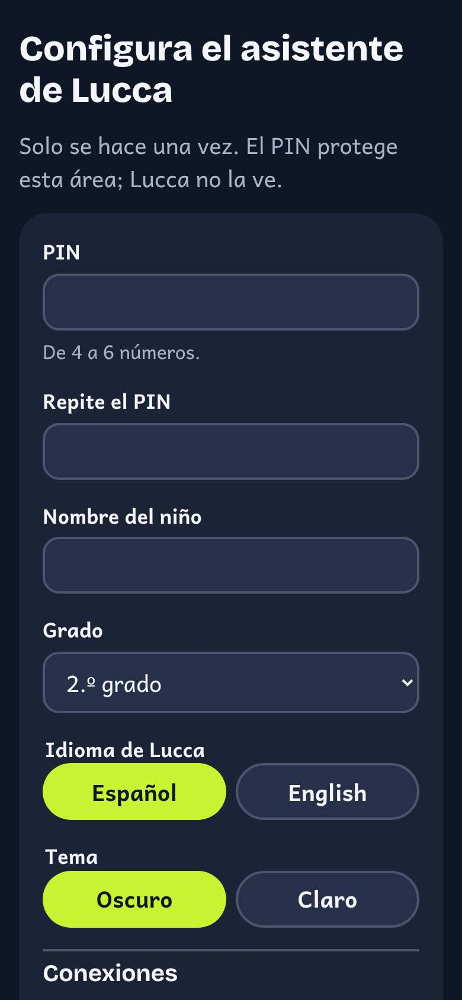
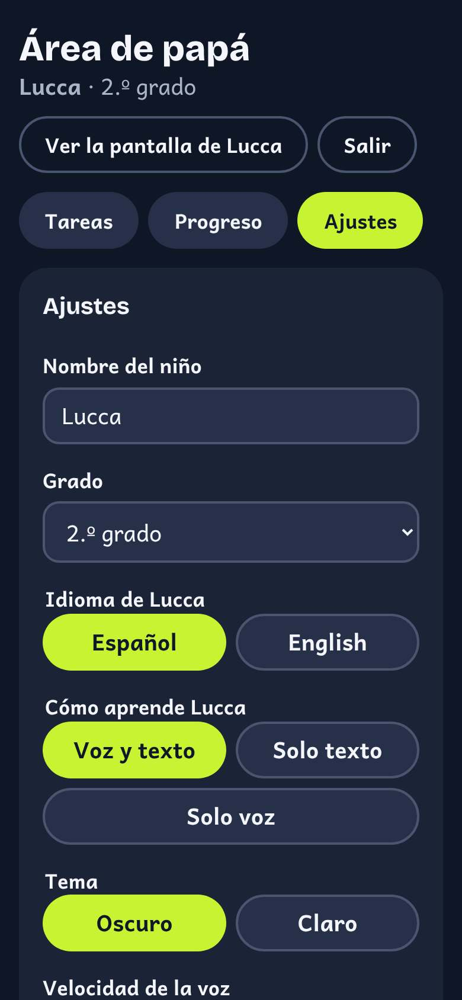
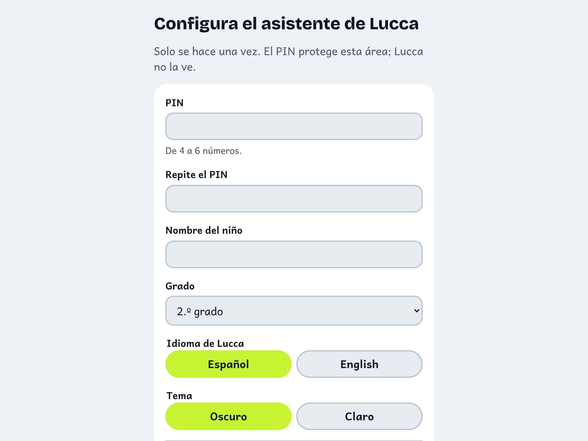
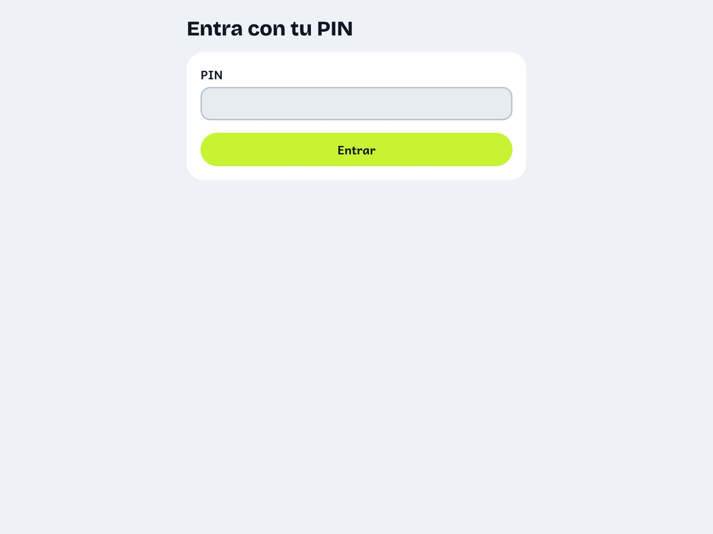
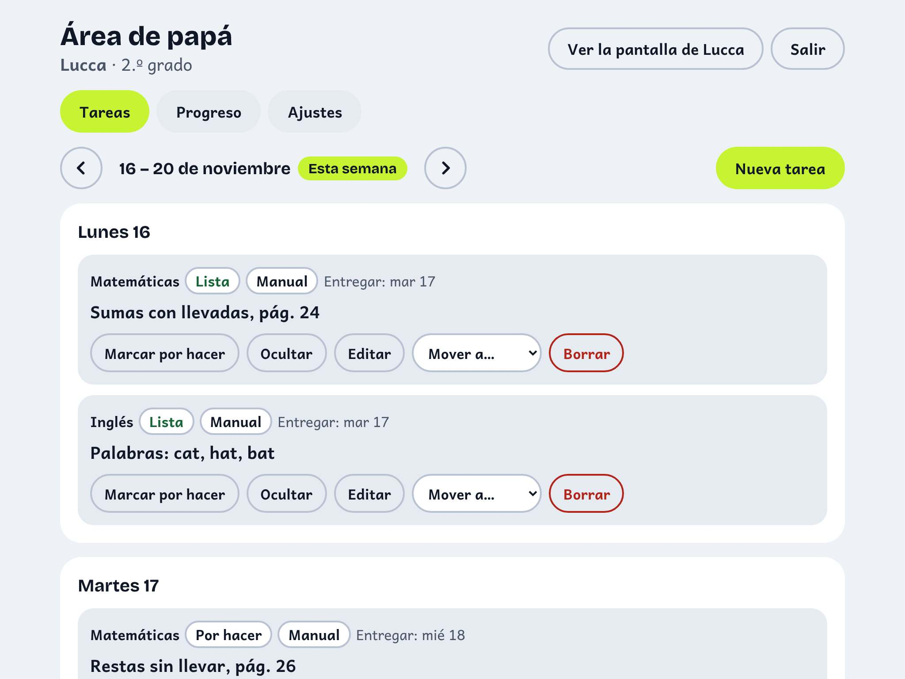
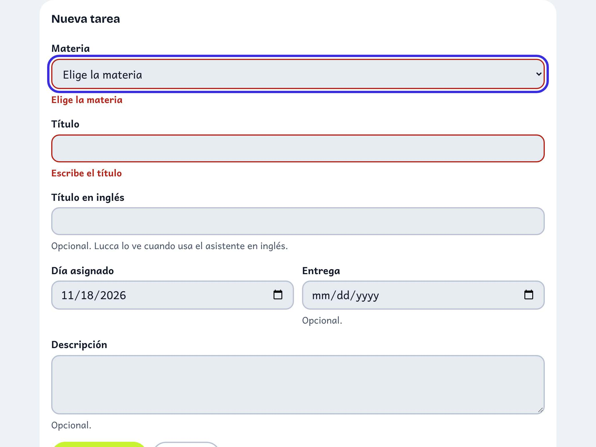

Pruebas funcionales · Asistente de Lucca
Navegador real (Chromium) contra el servidor real, con el reloj fijo en el miércoles 18 de noviembre de 2026 (mediodía, Panamá).
43 escenarios43 pasaron0 fallaron16 positivos13 negativos14 bordes


Sin agenda: Lucca ve "Pídele a papá que conecte tu agenda" y el enlace al área de papá lleva al PIN
✔ pasó
Servidor caído: pantalla amable con reintento, y al volver la agenda aparece
✔ pasóFalla "¡Ya la hice!" (error 500): dice "Inténtalo otra vez", no marca nada y el reintento funciona
✔ pasóDomingo: abre el lunes siguiente y ningún día es "Hoy"
✔ pasóMartes 22:00 en Panamá (ya miércoles en UTC): Lucca ve el martes
✔ pasó
Inglés y modo "Leer": el texto cambia de idioma y desaparecen los botones de audio
✔ pasó
Título de 200 caracteres en la tarjeta de Lucca en móvil y tablet vertical, sin desbordes
✔ pasóPrimera vez: aparece el asistente de configuración y la falta de IA/Mereb no bloquea
✔ pasóPIN de 3 dígitos: mensaje junto al campo y nada se guarda
✔ pasóPIN con letras: se rechaza
✔ pasó
Confirmación distinta: se rechaza
✔ pasó
Nombre vacío: se rechaza
✔ pasó
Nombre de 31 caracteres: se rechaza (el de 30 se acepta en P06b)
✔ pasóNombre de exactamente 30 caracteres: se acepta y se ve sin desbordes
✔ pasóConfiguración completa: entra al panel y la cookie de sesión es segura
✔ pasó

"Salir" cierra la sesión: volver atrás o pedir datos ya no muestra nada
✔ pasó

PIN incorrecto: dice cuántos intentos quedan
✔ pasóUn PIN con formato inválido ("12") no gasta intento
✔ pasó
Cinco fallos seguidos bloquean: cuenta atrás en pantalla y el PIN correcto no entra
✔ pasó

Sin sesión (navegador limpio): /papa pide el PIN y la API responde 401 sin datos
✔ pasó
El PIN correcto después de varios fallos reinicia la cuenta
✔ pasó
Crear una tarea manual con título en inglés: Lucca la ve el jueves en español e inglés
✔ pasó
Tarea inválida (sin título, entrega antes del día) no se guarda y dice el motivo
✔ pasó
Título de 200 caracteres con <script>, comillas y emoji: se ve como texto, sin desbordes, en papá y en Lucca
✔ pasóMover una tarea de día: Lucca la ve en el día nuevo
✔ pasó
Ocultar una tarea: Lucca deja de verla, papá la ve atenuada y puede mostrarla de nuevo
✔ pasó

Marcar lista no da estrellas: Lucca la ve lista y sus estrellas no cambian
✔ pasóEditar el título: el formulario viene lleno y Lucca ve el cambio
✔ pasóBorrar: cancelar no cambia nada; confirmar elimina del todo una tarea manual
✔ pasóSemanas: solo la anterior, la actual y la siguiente; los extremos se deshabilitan y se puede crear en la siguiente
✔ pasó

Tarea sin fechas: papá la ve en "Sin fecha" y Lucca la ve hoy
✔ pasó

30 tareas en un día: papá y Lucca las muestran todas sin romper el diseño
✔ pasó


Sin actividad de Lucca: el progreso lo dice claramente en vez de mostrar ceros confusos
✔ pasóLucca completa tareas, usa pistas y pide ayuda: el progreso de papá lo muestra
✔ pasóCambiar el nombre: el panel y el saludo de Lucca cambian
✔ pasó
Tema claro y velocidad 1,1: papá lo ve al instante y Lucca desde la siguiente carga
✔ pasó
Si Lucca solo cambió el idioma en su tablet, el tema que papá cambie después sí se aplica
✔ pasóVelocidad 2 y nombre vacío: se rechazan con el motivo y los ajustes anteriores se conservan
✔ pasó
Cambiar el PIN: el nuevo entra, el viejo ya no y las demás sesiones se cierran
✔ pasó

PIN actual incorrecto al cambiarlo: no cambia y cuenta como intento fallido
✔ pasóTodas las pantallas de papá a 390, 768 y 1024 px en oscuro y claro: sin desplazamiento, controles ≥ 44 px, texto ≥ 16 px y contraste 4,5:1
✔ pasó
configuracion-390-darkacceso-390-dark tareas-390-dark
tareas-390-dark formulario-390-dark
formulario-390-dark
ajustes-390-dark tareas-390-light
tareas-390-light tareas-768-dark
tareas-768-dark progreso-768-light
progreso-768-light ajustes-768-light
ajustes-768-light progreso-1024-dark
progreso-1024-dark
configuracion-1024-light
acceso-1024-light
tareas-1024-light
formulario-1024-light